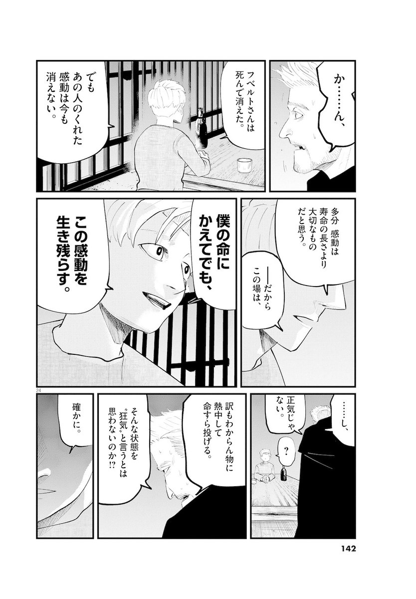
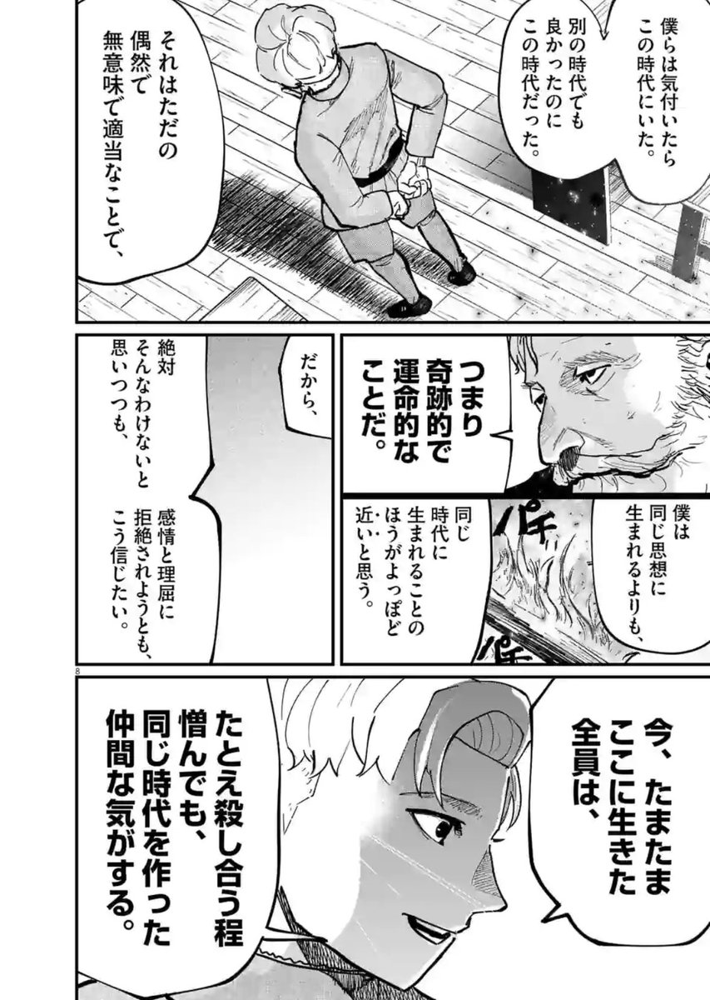
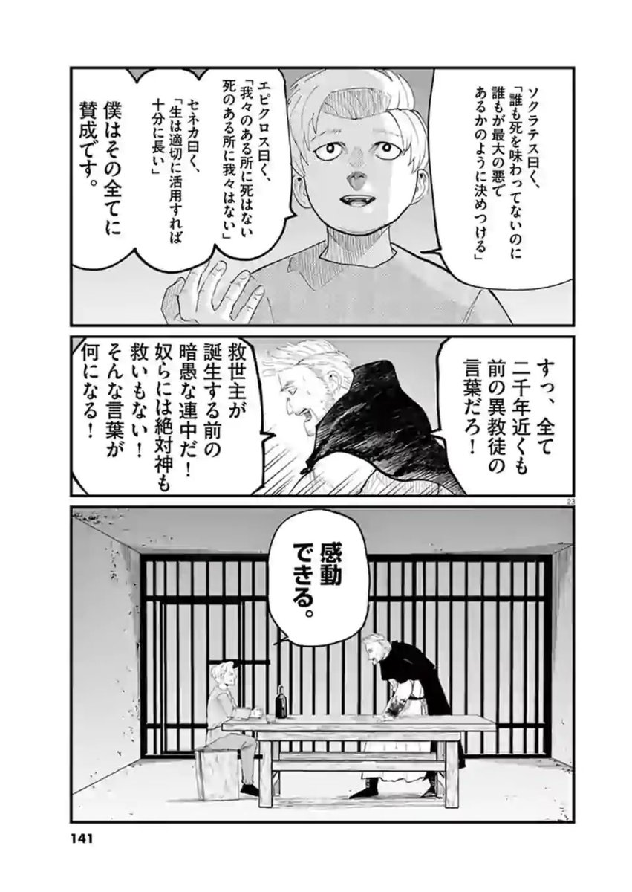
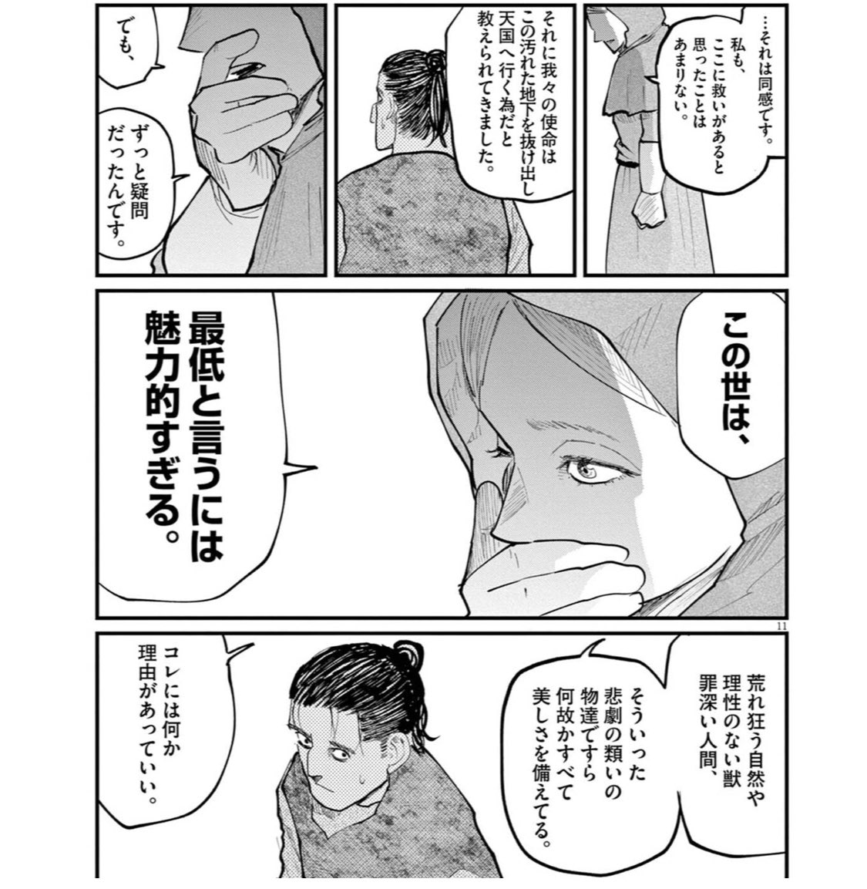
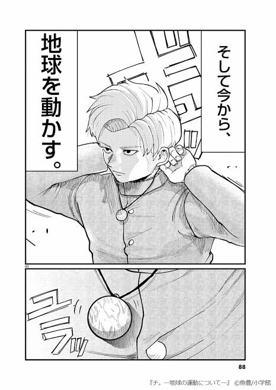
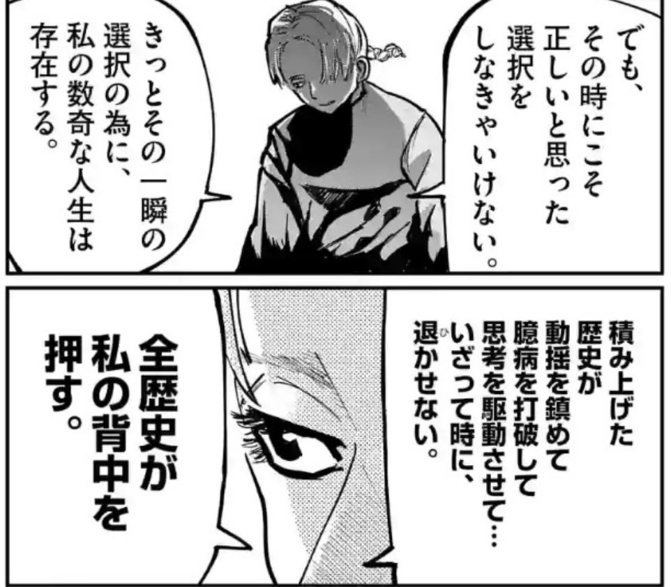

shogo / personal / profile
久保田 翔己
Shogo Kubota
Wanderlust株式会社 COO
東証プライム上場企業の部長職以上を相手に、LLMと社内データを使った戦略コンサルティングを担当している（2026年7月時点）
基本Basics
- 現職
- Wanderlust株式会社 COO（2026年1月〜）
- 専門
- LLMと社内データを組み合わせた実装設計、AI・DXの導入コンサルティング、プロジェクトマネジメント
- 関心領域
- 企業分析、資本配分、産業構造、制度と政治
- 拠点
- 東京都千代田区
人生の羅針盤North Star
愛・至誠・感動
Agape・Aletheia・Thaumazein
三つとも古代ギリシャ語から取った。愛はアガペー。見返りを求めずに相手へ向ける関心をいう。至誠はアレーテイアで、原義は隠れていないこと。隠さずに本当のことを言う態度を指す。感動はタウマゼイン。世界に驚く力のことで、アリストテレスは哲学の始まりをここに置いた。迷ったときはこの三つに照らして決める。






魚豊『チ。―地球の運動について―』（小学館）より
経歴Timeline
- 〜2024ブティック系のコンサルティングファームでアナリストを務め、市場調査と提案資料の作成を担当。同時期にSNS運用の代行も手がけた。カンボジアのNPOで現地業務に入り、難民支援団体のチャリティーランナーとして大阪マラソンに出走。
- 2024/08Wanderlust に Engineer として参画。
- 2024/09Chief of Staff に転向。
- 2025/01営業に移る。
- 2025/06プロジェクトマネジメントを受け持つ。
- 2026/01COO に就任。
できることWhat I Do
- AI 導入の要件定義 — 業務の棚卸しから、どの工程を LLM に任せれば効果が出るかの切り分けまで。診断のない打ち手は出さない
- プロジェクトマネジメント — WBS、体制設計、リスク・課題管理、フェーズ設計。担当と期限のないタスクは置かない
- RAG・社内データ活用の設計 — 社内に溜まった提案書・議事録・報告書を、検索と生成で使える形に整える
- 企業分析 — 事業モデルの分解、財務トレンド、資本配分。company research にまとめている
公表事例In the Press
受賞Awards
小中学生のときの受賞から、県大会以上のものを並べた。理科・技術・美術・文章にまたがる。
- 2020/01全国全国中学生創造ものづくり教育フェア 全国大会（ロボットコンテスト）— 優秀賞、審査員特別賞
- 2019/12関東甲信越同フェア 関東甲信越地区大会 応用部門 — テクニカル賞。10都県から集まった32チームのうちの1つ。決勝トーナメントに残るのは上位16チーム
- 2019/11県創造アイデアロボットコンテスト 埼玉県予選 — 応用部門・活用部門の2部門とも優勝し、どちらも地区大会の出場権を得た
- 2018/02県埼玉県小・中学校児童生徒美術展 — 特選（立体の部）。地区展を通過した作品だけが並ぶ中央展での受賞
- 2016/10県埼玉県科学教育振興展覧会 中央展 — 優秀賞。県内8地区の地区展から集まった約80点での受賞。小5から2年かけて水ロケットの飛距離を測り続けた自由研究
- 2016/02県埼玉県読書感想文コンクール — 特選。県内の小学5年生は約6.1万人。校内選考と市の審査を通った作品だけが県審査に進む
渡航Countries Visited
カンボジア、スイス、オランダ、インドネシア、シンガポール、マレーシア、中国、アゼルバイジャン、トルコ、クウェート、エジプト、サウジアラビア、アラブ首長国連邦、フィリピン、キルギス、カザフスタン、ウズベキスタン
中央アジアへは一帯一路の現状を見に行った。港湾と鉄道がどこに引かれているかは地図でも分かるが、そこに何が集まり、何が通り過ぎるだけなのかは現地でないと分からない。
ここに置いているものOn This Site